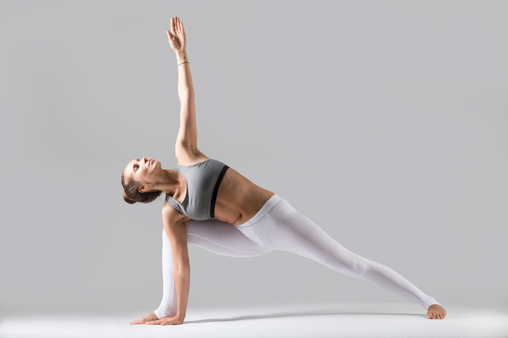

Asanas:Posturas

Postura da Meia-Lua
Ardha Chandrasana

Postura da Árvore
Vrksasana

Postura da Montanha
Tadasana

Postura de lotus
Padmasana
Ardha Chandrasana
Vrksasana
Tadasana
Padmasana
Tanto a meditação quanto a yoga são práticas que oferecem inúmeros benefícios para o corpo e a mente. A meditação ajuda a acalmar a mente, reduzir o estresse e a ansiedade, melhorar a concentração e a memória, aumentar a compaixão e a empatia, e melhorar a qualidade do sono. A yoga, por sua vez, pode ajudar a aumentar a flexibilidade, a força muscular e a resistência, reduzir a dor e a inflamação, melhorar a circulação sanguínea e a função cardiovascular, e reduzir o estresse e a ansiedade. Além disso, tanto a meditação quanto a yoga são práticas que promovem o bem-estar emocional, espiritual e físico, e podem ser praticadas por pessoas de todas as idades e níveis de aptidão física. Portanto, se você está procurando maneiras de melhorar sua saúde e bem-estar geral, a meditação e a yoga são duas práticas que valem a pena explorar.